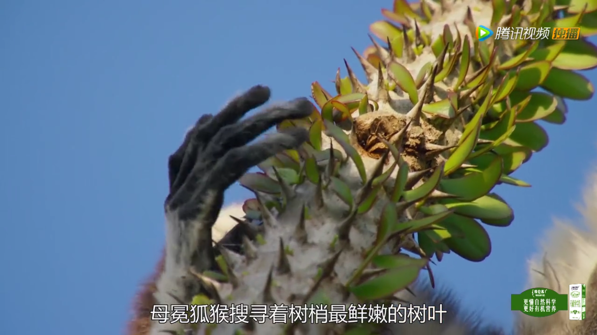

地球脉动豆瓣评分9.9分
第一次看到评分这么高，很好奇这是部什么样的纪录片，充满了期待。
以下是我整理印象深刻部分也觉得特别把它们单独写出来很值得敬畏
首先是猴子，它们同宗同源却进化出了约100多个不同的种类
而冕猴是我印象最深刻的它们生活在广袤的马达加斯岛上最贫瘠险恶的角落对它们而言，要学的还有很多这里缺食物缺水还要在
满是荆棘上行走每一步还都要非常小心

第二幕应该是这一集最深刻的片段了 海鬣蜥[hai lie xi]把卵产在沙中，6月份开始破壳而出的时候，它们十分脆弱，它们必须加入海岸边的成年鬣蜥但这一形进过程险象环生
一只鬣蜥捕捉到了这个残酷的世界
游蛇在疯狂的追捕着这只蜥蜴，由于蛇的视力很差只能感觉到运动如果小鬣蜥保持不动就能避免被游蛇发现
游蛇游走到小鬣蜥尾巴附近了一场博弈开始了
寡不敌众小鬣蜥跑的再快也还是被游蛇捕到最终像其它鬣蜥一样被吞掉
然而....
命运的手掌里面
是有漏网之鱼的
这是近乎奇迹般的一次逃脱

第三幕


整个岛屿都是小企鹅 企鹅父母轮流守护小企鹅，直到它们长大能够独立行动 这些小企鹅饿坏了
但企鹅妈妈没有多余的食物来喂养它们 它们能够生存要看企鹅爸爸何时能带着食物归来
而企鹅爸爸正遭遇着最糟糕的时刻
一些企鹅满载而归而另外一些企鹅就没这么幸运了
这是世界上最大的企鹅栖息地了
公企鹅通过母企鹅独特的叫声来分辨它们 小企鹅终于可以饱餐一顿


而这时需要母企鹅出去捕食了